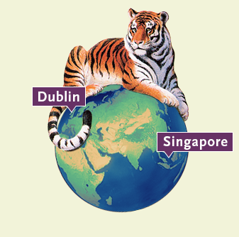
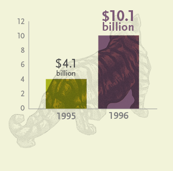

1990s
More innovative firsts
-
At AGF, we posed the question ‘What are you doing after work?’ because we wanted to underscore our commitment to help Canadians reach any destination, any goal or any dream throughout their lifetime.
-
 1991 Sustainable Investing
1991 Sustainable Investing
AGF Global Sustainable Growth Equity Fund, launched by Acuity Investments in December 1991, was one of the first sustainable investing funds in the world and the first in Canada to report its footprint.*
*Starting in September 2015, the Fund reports its environmental metrics on a quarterly basis. To find out more, visit AGF.com/SustainableInvesting.
-
1991 Recognizing the future
1991: AGF International Advisors (AGFIA) opens in Dublin
1996: AGF Asset Management Asia Ltd. opens in Singapore
-
1996 Assets double
With the acquisition of 20/20, AGF’s assets under management nearly doubled and reached $10 billion in 1996.
-

-

Making a difference
AGF is a long-time partner of TIFF, one of the most prestigious international film festivals in the world.
-
 The next generation
The next generation
1997: Blake Goldring named President of AGF Management Limited
1998: Judy Goldring, now President and Chief Administration Officer, joins AGF.